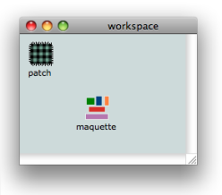
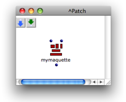

OpenMusic DocumentationHiérarchie de section : OM 6.6 User Manual > Maquettes > Creating a Maquette
OpenMusic DocumentationHiérarchie de section : OM 6.6 User Manual > Maquettes > Creating a Maquette
Navigation : page précédente | page suivante
Attention, votre navigateur ne supporte pas le javascript ou celui-ci à été désactivé. Certaines fonctionnalités de ce guide sont restreintes.
Creating a Maquette
Like patches, maquettes be used as autonomous programs, or within other patches and maquettes, like blue and red patches. Consequently, OM also offers two types of maquettes :
|
|
|
|
Voir aussi
General Features
General and Local Maquetttes
General maquettes can be :
- added in a workspace and used as main programs.
- dropped and used in a patch, like an abstraction.
Local maquettes can be added directly into a patch like an internal abstraction.
Using Maquettes in Other Maquettes
Maquettes can also be used within other maquettes, according to similar principles :
- an existing maquette can be dropped and used into another maquette.
- a maquette can be created directly within another maquette.
Conversions
Last, like blue and red patches again, general maquettes can be converted into local maquettes, and vice-versa.
Creating General Maquettes
Procedure

|
General maquettes are equivalent to standard blue patches. Like them, they can be created in the workspace, or one of its folders. To add a maquette in a workspace :
|
Maquette Files
General maquettes are persistent files that can be manipulated like patches. They can be :
- imported and exported from a workspace
- duplicated and renamed
- used in other maquettes and patches.
Managing Items in the Workspace
Using Maquettes inside Patches
Using a General Maquette in a Patch
Once a maquette is added in a workspace, it can be dropped in a patch, on the same basis as an abstraction : like a "global" abstraction, or blue patch, the maquette keeps it original reference, which means any modification will affect all of its representations.
Adding an Internal Maquette in a Patch

|
Internal maquettes are the equivalent to internal – red – patches .They can be created inside a patch. To add a maquette in a patch :
|
Converting Maquettes
General maquettes can be converted into internal maquettes, and reciprocally, internal maquettes can be converted into global abstractions.
|

|
Patch Conversion Procedures
Using Maquettes inside Other Maquettes
This use of maquettes mostly sets forth a number of specificities dealing with the use of TemporalBoxes[1].
Creating and Using Objects within Maquettes
Saving a Maquette
To save a maquette :
- press
Cmd+s - choose
File / Save -
Ctrl/ right click in the maquette and chooseLast Savedin the contextual menu.
The Last Saved command allows to reset the maquette to its last saved version.
Références :
TemporalBox
A TemporalBox refers to an object in a maquette : an instance, a patch, or another maquette.
Plan :
- OpenMusic Documentation
- OM 6.6 User Manual
- Introduction
- System Configuration and Installation
- Going Through an OM Session
- The OM Environment
- Visual Programming I
- Visual Programming II
- Basic Tools
- Score Objects
- Maquettes
- Creating a Maquette
- TemporalBoxes
- The Maquette Editor
- Maquette Programming
- Maquettes in Patches
- Sheet
- MIDI
- Audio
- SDIF
- Lisp Programming
- Errors and Problems
- OpenMusic QuickStart
Navigation : page précédente | page suivante
A propos...(c) Ircam - Centre Pompidou